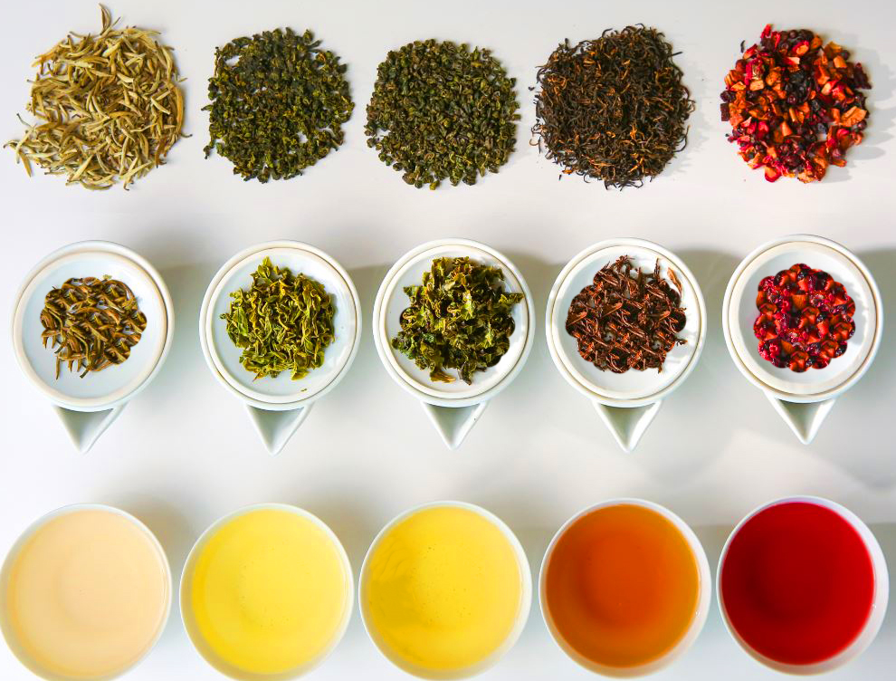
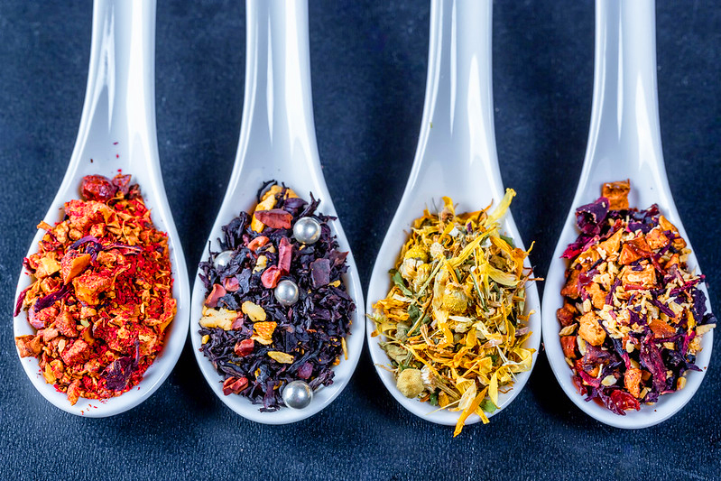

The 5 Main Types of Tea
The origin and uses of each main type of tea
White Tea
White tea is a very subtle tea that usually doesn't contain caffine or extra flavors. The white tea leaves are the freshest/youngest leaves of a tea tree making their tea colorless and almost oderles. Many people enjoy white tea with meals because it's simmilar to hot water but with a little flavor.
Green Tea
Green tea is alike white tea in multiple ways but the biggest similarity would be the color and taste. Green tea is not oxidized meaning that instead of oxygen aging the flavors, Green tea leaves are steamed, traditionally in Japan, making the flavor profile a bit more escentric then white tea and also allowing caffine to be in the tea. Green tea has the lowest quantity of caffine out of any caffinated tea.
Oolong Tea
Oolong tea is most popular in Eastern Asia. Coming from primarily China these tea leaves (and sometimes tea buds) are oxidized and left to ferment for a bit longer than green tea leaves. This makes oolong teas have a richer taste and a smoother mouth feel. Oolong tea is in the midddle range for caffinated teas.
Black Tea
Black tea is regarded as the "strongest" tea because of how long the oxidation process takes compared to other teas. This makes the flavor robust and intensifies the color to a deep amber. Black tea has the highest amount of caffine out of any other tea, which makes it comparible to coffee. Another popular use for blck tea would be iced tea which is primarily made in the western hemisphere with the exception of boba tea.
Herbal Tea
Herbal teas are a bit different in the sense that none of them are the same. There are a million types of herbal tea but generally herbal teas include:
- Dried Fruits
- Flowers
- Spices
These ingredients mainly focus on the flavor aspect and can also be used as calming and relaxing teas because of the lack of caffine. Chamomile is a dried flower that helps relax and calm down after a long day. These teas are regarded as on of the best home remedies for insomnia and panic attacks. Plus with the abundance of dried fruits and spices to try you can never really run out of flavors.